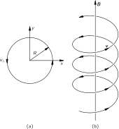
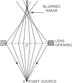
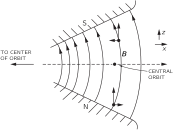
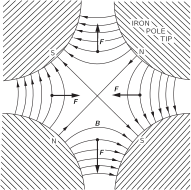
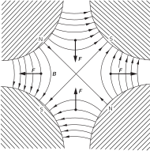
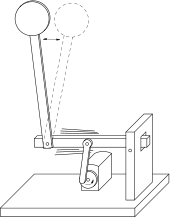

29. The Motion of Charges in Electric and Magnetic Fields
29–1 Motion in a uniform electric or magnetic field#
We want now to describe—mainly in a qualitative way—the motions of charges in various circumstances. Most of the interesting phenomena in which charges are moving in fields occur in very complicated situations, with many, many charges all interacting with each other. For instance, when an electromagnetic wave goes through a block of material or a plasma, billions and billions of charges are interacting with the wave and with each other. We will come to such problems later, but now we just want to discuss the much simpler problem of the motions of a single charge in a given field. We can then disregard all other charges—except, of course, those charges and currents which exist somewhere to produce the fields we will assume.
We should probably ask first about the motion of a particle in a uniform electric field. At low velocities, the motion is not particularly interesting—it is just a uniform acceleration in the direction of the field. However, if the particle picks up enough energy to become relativistic, then the motion gets more complicated. But we will leave the solution for that case for you to play with.
Next, we consider the motion in a uniform magnetic field with zero electric field. We have already solved this problem—one solution is that the particle goes in a circle. The magnetic force q\mathbf{v}\times\mathbf{B} is always at right angles to the motion, so d\mathbf{p}/dt is perpendicular to \mathbf{p} and has the magnitude vp/R, where R is the radius of the circle:
The radius of the circular orbit is then
That is only one possibility. If the particle has a component of its motion along the field direction, that motion is constant, since there can be no component of the magnetic force in the direction of the field. The general motion of a particle in a uniform magnetic field is a constant velocity parallel to \mathbf{B} and a circular motion at right angles to \mathbf{B} —the trajectory is a cylindrical helix (Fig. 29–1). The radius of the helix is given by Eq. ( 29.1) if we replace p by p_\perp, the component of momentum at right angles to the field.

29–2 Momentum analysis#
A uniform magnetic field is often used in making a “momentum analyzer,” or “momentum spectrometer,” for high-energy charged particles. Suppose that charged particles are shot into a uniform magnetic field at the point A in Fig. 29–2 (a), the magnetic field being perpendicular to the plane of the drawing. Each particle will go into an orbit which is a circle whose radius is proportional to its momentum. If all the particles enter perpendicular to the edge of the field, they will leave the field at a distance x (from A) which is proportional to their momentum p. A counter placed at some point such as C will detect only those particles whose momentum is in an interval \Delta p near the momentum p=qBx/2.
It is, of course, not necessary that the particles go through 180^\circ before they are counted, but the so-called “ 180^\circ spectrometer” has a special property. It is not necessary that all the particles enter at right angles to the field edge. Figure 29–2 (b) shows the trajectories of three particles, all with the same momentum but entering the field at different angles. You see that they take different trajectories, but all leave the field very close to the point C. We say that there is a “focus.” Such a focusing property has the advantage that larger angles can be accepted at A —although some limit is usually imposed, as shown in the figure. A larger angular acceptance usually means that more particles are counted in a given time, decreasing the time required for a given measurement.
By varying the magnetic field, or moving the counter along in x, or by using many counters to cover a range of x, the “spectrum” of momenta in the incoming beam can be measured. [By the “momentum spectrum” f(p), we mean that the number of particles with momenta between p and (p+dp) is f(p)\,dp.] Such measurements have been made, for example, to determine the distribution of energies in the \beta -decay of various nuclei.
There are many other forms of momentum spectrometers, but we will describe just one more, which has an especially large solid angle of acceptance. It is based on the helical orbits in a uniform field, like the one shown in Fig. 29–1. Let’s think of a cylindrical coordinate system— \rho,\theta,z —set up with the z -axis along the direction of the field. If a particle is emitted from the origin at some angle \alpha with respect to the z -axis, it will move along a spiral whose equation is
where a, b, and k are parameters you can easily work out in terms of p, \alpha, and the magnetic field B. If we plot the distance \rho from the axis as a function of z for a given momentum, but for several starting angles, we will get curves like the solid ones drawn in Fig. 29–3. (Remember that this is just a kind of projection of a helical trajectory.) When the angle between the axis and the starting direction is larger, the peak value of \rho is large but the longitudinal velocity is less, so the trajectories for different angles tend to come to a kind of “focus” near the point A in the figure. If we put a narrow aperture of A, particles with a range of initial angles can still get through and pass on to the axis, where they can be counted by the long detector D.
Particles which leave the source at the origin with a higher momentum but at the same angles, follow the paths shown by the broken lines and do not get through the aperture at A. So the apparatus selects a small interval of momenta. The advantage over the first spectrometer described is that the aperture A —and the aperture A' —can be an annulus, so that particles which leave the source in a rather large solid angle are accepted. A large fraction of the particles from the source are used—an important advantage for weak sources or for very precise measurements.
One pays a price for this advantage, however, because a large volume of uniform magnetic field is required, and this is usually only practical for low-energy particles. One way of making a uniform field, you remember, is to wind a coil on a sphere, with a surface current density proportional to the sine of the angle. You can also show that the same thing is true for an ellipsoid of rotation. So such spectrometers are often made by winding an elliptical coil on a wooden (or aluminum) frame. All that is required is that the current in each interval of axial distance \Delta x be the same, as shown in Fig. 29–4.
29–3 An electrostatic lens#
Particle focusing has many applications. For instance, the electrons that leave the cathode in a TV picture tube are brought to a focus at the screen—to make a fine spot. In this case, one wants to take electrons all of the same energy but with different initial angles and bring them together in a small spot. The problem is like focusing light with a lens, and devices which do the corresponding job for particles are also called lenses.
One example of an electron lens is sketched in Fig. 29–5. It is an “electrostatic” lens whose operation depends on the electric field between two adjacent electrodes. Its operation can be understood by considering what happens to a parallel beam that enters from the left. When the electrons arrive at the region a, they feel a force with a sidewise component and get a certain impulse that bends them toward the axis. You might think that they would get an equal and opposite impulse in the region b, but that is not so. By the time the electrons reach b they have gained energy and so spend less time in the region b. The forces are the same, but the time is shorter, so the impulse is less. In going through the regions a and b, there is a net axial impulse, and the electrons are bent toward a common point. In leaving the high-voltage region, the particles get another kick toward the axis. The force is outward in region c and inward in region d, but the particles stay longer in the latter region, so there is again a net impulse. For distances not too far from the axis, the total impulse through the lens is proportional to the distance from the axis (Can you see why?), and this is just the condition necessary for lens-type focusing.
You can use the same arguments to show that there is focusing if the potential of the middle electrode is either positive or negative with respect to the other two. Electrostatic lenses of this type are commonly used in cathode-ray tubes and in some electron microscopes.
29–4 A magnetic lens#
Another kind of lens—often found in electron microscopes—is the magnetic lens sketched schematically in Fig. 29–6. A cylindrically symmetric electromagnet has very sharp circular pole tips which produce a strong, nonuniform field in a small region. Electrons which travel vertically through this region are focused. You can understand the mechanism by looking at the magnified view of the pole-tip region drawn in Fig. 29–7. Consider two electrons a and b that leave the source S at some angle with respect to the axis. As electron a reaches the beginning of the field, it is deflected away from you by the horizontal component of the field. But then it will have a lateral velocity, so that when it passes through the strong vertical field, it will get an impulse toward the axis. Its lateral motion is taken out by the magnetic force as it leaves the field, so the net effect is an impulse toward the axis, plus a “rotation” about the axis. All the forces on particle b are opposite, so it also is deflected toward the axis. In the figure, the divergent electrons are brought into parallel paths. The action is like a lens with an object at the focal point. Another similar lens upstream can be used to focus the electrons back to a single point, making an image of the source S.
29–5 The electron microscope#
You know that electron microscopes can “see” objects too small to be seen by optical microscopes. We discussed in Chapter 30 of Vol. I the basic limitations of any optical system due to diffraction of the lens opening. If a lens opening subtends the angle 2\theta from a source (see Fig. 29–8), two neighboring spots at the source cannot be seen as separate if they are closer than about
where \lambda is the wavelength of the light. With the best optical microscope, \theta approaches the theoretical limit of 90^\circ, so \delta is about equal to \lambda, or approximately 5000 angstroms.
The same limitation would also apply to an electron microscope, but there the wavelength is—for 50 -kilovolt electrons—about 0.05 angstrom. If one could use a lens opening of near 30^\circ, it would be possible to see objects only \frac{1}{5} of an angstrom apart. Since the atoms in molecules are typically 1 or 2 angstroms apart, we could get photographs of molecules. Biology would be easy; we would have a photograph of the DNA structure. What a tremendous thing that would be! Most of present-day research in molecular biology is an attempt to figure out the shapes of complex organic molecules. If we could only see them!
Unfortunately, the best resolving power that has been achieved in an electron microscope is more like 20 angstroms. The reason is that no one has yet designed a lens with a large opening. All lenses have “spherical aberration,” which means that rays at large angles from the axis have a different point of focus than the rays nearer the axis, as shown in Fig. 29–9. By special techniques, optical microscope lenses can be made with a negligible spherical aberration, but no one has yet been able to make an electron lens which avoids spherical aberration.

In fact, one can show that any electrostatic or magnetic lens of the types we have described must have an irreducible amount of spherical aberration. This aberration—together with diffraction—limits the resolving power of electron microscopes to their present value.
The limitation we have mentioned does not apply to electric and magnetic fields which are not axially symmetric or which are not constant in time. Perhaps some day someone will think of a new kind of electron lens that will overcome the inherent aberration of the simple electron lens. Then we will be able to photograph atoms directly. Perhaps one day chemical compounds will be analyzed by looking at the positions of the atoms rather than by looking at the color of some precipitate!
29–6 Accelerator guide fields#
Magnetic fields are also used to produce special particle trajectories in high energy particle accelerators. Machines like the cyclotron and synchrotron bring particles to high energies by passing the particles repeatedly through a strong electric field. The particles are held in their cyclic orbits by a magnetic field.
We have seen that a particle in a uniform magnetic field will go in a circular orbit. This, however, is true only for a perfectly uniform field. Imagine a field B which is nearly uniform over a large area but which is slightly stronger in one region than in another. If we put a particle of momentum p in this field, it will go in a nearly circular orbit with the radius R=p/qB. The radius of curvature will, however, be slightly smaller in the region where the field is stronger. The orbit is not a closed circle but will “walk” through the field, as shown in Fig. 29–10. We can, if we wish, consider that the slight “error” in the field produces an extra angular kick which sends the particle off on a new track. If the particles are to make millions of revolutions in an accelerator, some kind of “radial focusing” is needed which will tend to keep the trajectories close to some design orbit.
Another difficulty with a uniform field is that the particles do not remain in a plane. If they start out with the slightest angle—or are given a slight angle by any small error in the field—they will go in a helical path that will eventually take them into the magnet pole or the ceiling or floor of the vacuum tank. Some arrangement must be made to inhibit such vertical drifts; the field must provide “vertical focusing” as well as radial focusing.
One would, at first, guess that radial focusing could be provided by making a magnetic field which increases with increasing distance from the center of the design path. Then if a particle goes out to a large radius, it will be in a stronger field which will bend it back toward the correct radius. If it goes to too small a radius, the bending will be less, and it will be returned toward the design radius. If a particle is once started at some angle with respect to the ideal circle, it will oscillate about the ideal circular orbit, as shown in Fig. 29–11. The radial focusing would keep the particles near the circular path.
Actually there is still some radial focusing even with the opposite field slope. This can happen if the radius of curvature of the trajectory does not increase more rapidly than the increase in the distance of the particle from the center of the field. The particle orbits will be as drawn in Fig. 29–12. If the gradient of the field is too large, however, the orbits will not return to the design radius but will spiral inward or outward, as shown in Fig. 29–13.
We usually describe the slope of the field in terms of the “relative gradient” or field index, n:
A guide field gives radial focusing if this relative gradient is greater than -1.

A radial field gradient will also produce vertical forces on the particles. Suppose we have a field that is stronger nearer to the center of the orbit and weaker at the outside. A vertical cross section of the magnet at right angles to the orbit might be as shown in Fig. 29–14. (For protons the orbits would be coming out of the page.) If the field is to be stronger to the left and weaker to the right, the lines of the magnetic field must be curved as shown. We can see that this must be so by using the law that the circulation of \mathbf{B} is zero in free space. If we take coordinates as shown in the figure, then
or
Since we assume that \frac{\partial B_z}{\partial x} is negative, there must be an equal negative \frac{\partial B_x}{\partial z}. If the “nominal” plane of the orbit is a plane of symmetry where B_x=0, then the radial component B_x will be negative above the plane and positive below. The lines must be curved as shown.
Such a field will have vertical focusing properties. Imagine a proton that is travelling more or less parallel to the central orbit but above it. The horizontal component of \mathbf{B} will exert a downward force on it. If the proton is below the central orbit, the force is reversed. So there is an effective “restoring force” toward the central orbit. From our arguments there will be vertical focusing, provided that the vertical field decreases with increasing radius; but if the field gradient is positive, there will be “vertical defocusing.” So for vertical focusing, the field index n must be less than zero. We found above that for radial focusing n had to be greater than -1. The two conditions together give the condition that
if the particles are to be kept in stable orbits. In cyclotrons, values very near zero are used; in betatrons and synchrotrons, the value n =-0.6 is typically used.
29–7 Alternating-gradient focusing#
Such small values of n give rather “weak” focusing. It is clear that much more effective radial focusing would be given by a large positive gradient ( n\gg1), but then the vertical forces would be strongly defocusing. Similarly, large negative slopes ( n\ll-1) would give stronger vertical forces but would cause radial defocusing. It was realized about 10 years ago, however, that a force that alternates between strong focusing and strong defocusing can still have a net focusing force.

To explain how alternating-gradient focusing works, we will first describe the operation of a quadrupole lens, which is based on the same principle. Imagine that a uniform negative magnetic field is added to the field of Fig. 29–14, with the strength adjusted to make zero field at the orbit. The resulting field—for small displacements from the neutral point—would be like the field shown in Fig. 29–15. Such a four-pole magnet is called a “quadrupole lens.” A positive particle that enters (from the reader) to the right or left of the center is pushed back toward the center. If the particle enters above or below, it is pushed away from the center. This is a horizontal focusing lens. If the horizontal gradient is reversed—as can be done by reversing all the polarities—the signs of all the forces are reversed and we have a vertical focusing lens, as in Fig. 29–16. For such lenses, the field strength—and therefore the focusing forces—increase linearly with the distance of the lens from the axis.

Now imagine that two such lenses are placed in series. If a particle enters with some horizontal displacement from the axis, as shown in Fig. 29–17 (a), it will be deflected toward the axis in the first lens. When it arrives at the second lens it is closer to the axis, so the force outward is less and the outward deflection is less. There is a net bending toward the axis; the average effect is horizontally focusing. On the other hand, if we look at a particle which enters off the axis in the vertical direction, the path will be as shown in Fig. 29–17 (b). The particle is first deflected away from the axis, but then it arrives at the second lens with a larger displacement, feels a stronger force, and so is bent toward the axis. Again the net effect is focusing. Thus a pair of quadrupole lenses acts independently for horizontal and vertical motion—very much like an optical lens. Quadrupole lenses are used to form and control beams of particles in much the same way that optical lenses are used for light beams.
We should point out that an alternating-gradient system does not always produce focusing. If the gradients are too large (in relation to the particle momentum or to the spacing between the lenses), the net effect can be a defocusing one. You can see how that could happen if you imagine that the spacing between the two lenses of Fig. 29–17 were increased, say, by a factor of three or four.
Let’s return now to the synchrotron guide magnet. We can consider that it consists of an alternating sequence of “positive” and “negative” lenses with a superimposed uniform field. The uniform field serves to bend the particles, on the average, in a horizontal circle (with no effect on the vertical motion), and the alternating lenses act on any particles that might tend to go astray—pushing them always toward the central orbit (on the average).
There is a nice mechanical analog which demonstrates that a force which alternates between a “focusing” force and a “defocusing” force can have a net “focusing” effect. Imagine a mechanical “pendulum” which consists of a solid rod with a weight on the end, suspended from a pivot which is arranged to be moved rapidly up and down by a motor driven crank. Such a pendulum has two equilibrium positions. Besides the normal, downward-hanging position, the pendulum is also in equilibrium “hanging upward”—with its “bob” above the pivot! Such a pendulum is drawn in Fig. 29–18.

By the following argument you can see that the vertical pivot motion is equivalent to an alternating focusing force. When the pivot is accelerated downward, the “bob” tends to move inward, as indicated in Fig. 29–19. When the pivot is accelerated upward, the effect is reversed. The force restoring the “bob” toward the axis alternates, but the average effect is a force toward the axis. So the pendulum will swing back and forth about a neutral position which is just opposite the normal one.
There is, of course, a much easier way of keeping a pendulum upside down, and that is by balancing it on your finger! But try to balance two independent sticks on the same finger! Or one stick with your eyes closed! Balancing involves making a correction for what is going wrong. And this is not possible, in general, if there are several things going wrong at once. In a synchrotron there are billions of particles going around together, each one of which may start out with a different “error.” The kind of focusing we have been describing works on them all.
29–8 Motion in crossed electric and magnetic fields#
So far we have talked about particles in electric fields only or in magnetic fields only. There are some interesting effects when there are both kinds of fields at the same time. Suppose we have a uniform magnetic field \mathbf{B} and an electric field \mathbf{E} at right angles. Particles that start out perpendicular to \mathbf{B} will move in a curve like the one in Fig. 29–20. (The figure is a plane curve, not a helix!) We can understand this motion qualitatively. When the particle (assumed positive) moves in the direction of \mathbf{E}, it picks up speed, and so it is bent less by the magnetic field. When it is going against the \mathbf{E} -field, it loses speed and is continually bent more by the magnetic field. The net effect is that it has an average “drift” in the direction of \mathbf{E}\times\mathbf{B}.
We can, in fact, show that the motion is a uniform circular motion superimposed on a uniform sidewise motion at the speed v_d=E/B —the trajectory in Fig. 29–20 is a cycloid. Imagine an observer who is moving to the right at a constant speed. In his frame our magnetic field gets transformed to a new magnetic field plus an electric field in the downward direction. If he has just the right speed, his total electric field will be zero, and he will see the electron going in a circle. So the motion we see is a circular motion, plus a translation at the drift speed v_d=E/B. The motion of electrons in crossed electric and magnetic fields is the basis of the magnetron tubes, i.e., oscillators used for generating microwave energy.
There are many other interesting examples of particle motions in electric and magnetic fields—such as the orbits of the electrons and protons trapped in the Van Allen belts—but we do not, unfortunately, have the time to deal with them here.